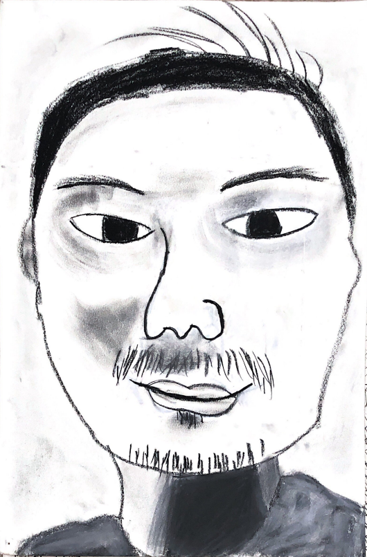

Self Portrait
Drawing of my self.
This was the first drawing that I felt proud of. Before going to college, I only drew stick figures. After taking a drawing class as an elective, I strengthen my skills as an artist to make a self-portrait of myself.